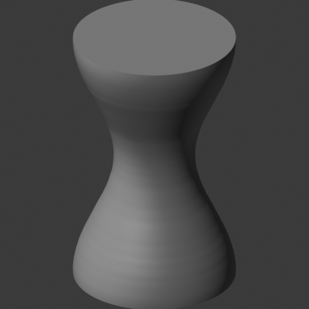

Wrong depth
The front mask matches perfectly. The side view exposes the incorrect thickness.
1.000 front area IoU
OPEN RESEARCH / BLENDER 5.2.2 LTS
From three silhouettes to an editable blockout. Explore the actual outputs, the measurements, and the parts still unresolved.
Retained evidence · 08 October 2026
Measurements retained; shaded previews show actual output geometry.

01 / THE ACTUAL OUTPUT
EXACT PIXEL DIFFERENCES
Reference only Output only
Colors mark real non-overlap on the original grid. The 4× crop enlarges pixels without smoothing, alignment or changing the score.
| Camera | Area IoU | Boundary IoU | Distance loss | Verdict |
|---|
Required gates: area ≥ 0.700 · boundary ≥ 0.800 · distance loss ≤ 0.050. Each view must pass.
02 / FROZEN SHAPE LIBRARY
These are project-authored synthetic fixtures. Preparation, index topology and live object-scale edits do not establish reconstructed-family acceptance. Select a family to inspect its frozen views.
03 / NEGATIVE CONTROLS
The front mask matches perfectly. The side view exposes the incorrect thickness.
Side and top masks match. Known-empty cavity probes still reject the filled shape.
The top silhouette matches while occupied probes detect the missing upper components.
Three retained preparation controls are caught. Their original area-observation protocol is separate from the full boundary/distance gates on actual reconstructions.
04 / THE MEASUREMENT CONTRACT
Silhouette, surface, solid boundary and editability are independent. A required failure or unavailable metric blocks acceptance.
Read metrics & limitations ↗Area IoU measures foreground overlap. Boundary IoU focuses on narrow outline bands: radius-2 elliptical erosion followed by radius-2 dilation. A small edge shift can matter much more here than in filled-area overlap. Signed-distance loss compares silhouette distance fields under the original normalization. Fixed reference cameras and all five views are retained.
4,096 deterministic area-weighted samples in each direction, seed 61007, use nearest native triangles in unchanged world coordinates. Geometric face normals remain oriented; opposite normals are 180°. Caps and intended corners remain included. The vase limits are 0.003 world units / 2.5° P95; triangle family/noise limits remain unqualified.
Index topology and oriented volume are screens. Actual retained-coordinate boundary qualification checks geometric intersections separately. Native artist-edit receipts verify supported semantic edits. Reference object-scale edits alone are narrower evidence.
Evidence uses Blender 5.2.2 LTS / Python 3.13.13; the retained native boundary helper uses Open3D 0.19.0 / Python 3.12.0. Frozen oblique frames can touch image borders. Historical scalloped vase inputs still need an authored smooth intent. Ten actual family reconstructions and remaining lifecycle producer integration are open.